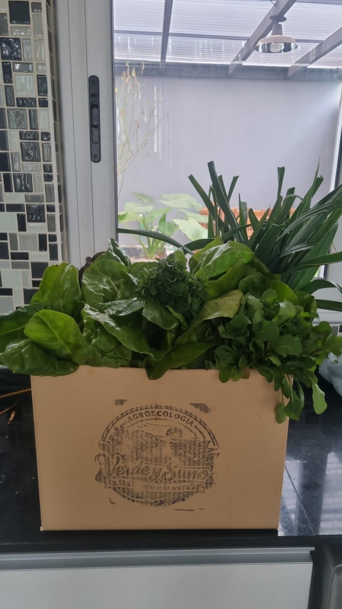
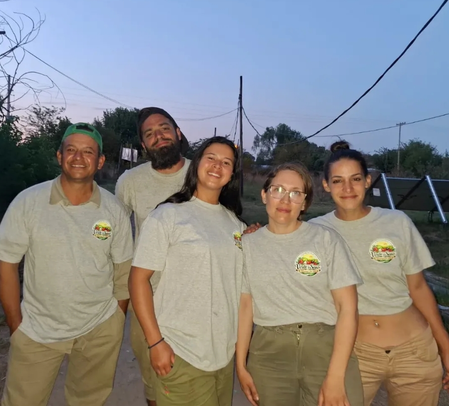

🌱
Agroecología de cercanía
Cultivamos respetando los ciclos naturales, el suelo y la biodiversidad de nuestra huerta.
El Pato · Berazategui
Verduras agroecológicas frescas, cultivadas cerca y armadas cada semana según lo mejor de nuestra huerta.
Encargar mi bolsón →Una elección con sabor
Elegimos cultivar en armonía con la tierra para que cada comida llegue a tu mesa con más sabor, variedad y conciencia.
Cultivamos respetando los ciclos naturales, el suelo y la biodiversidad de nuestra huerta.
Preparamos cada bolsón con verduras de estación, cosechadas frescas desde nuestra huerta.
Además de lo esencial, cultivamos especies y sabores que hacen especial a cada temporada.
El bolsón semanal
Una selección equilibrada de verduras de estación, cosechadas cerca y pensada para comer fresco, variado y con mucho sabor.

Simple y directo
Nos escribís, te contamos qué hay esta semana y coordinamos tu retiro.
Escribinos por WhatsApp para conocer el bolsón de la semana y reservar el tuyo.
Armamos tu bolsón con lo mejor que está disponible en la huerta.
Coordinamos día y horario para que retires tu pedido en Ruta 2 Km 40.

Nuestra historia
En Verde y Sano somos una familia unida por un sueño grande: devolverle a la tierra lo que ella nos da.
Elegimos la agroecología como forma de vida. Cada bolsón es el resultado de manos que siembran, cuidan y cosechan con amor, sin químicos ni atajos.
Gracias por apoyar el trabajo local y sumarte a una alimentación más consciente.
Para proyectos y negocios
Trabajamos directo con quienes quieren sumar verduras agroecológicas frescas a su cocina o negocio.
Planificamos producción exclusiva para tu proyecto, con variedades y volumen acordados.
Abastecimiento directo de la huerta para diferenciar tu negocio con productos frescos y de estación.
Verduras y variedades especiales para cartas que valoran el origen, la frescura y el sabor.
Punto de retiro
Coordinamos día y horario para que retires tu pedido cerca de la huerta.
Punto de retiro: Ruta 2 Km 40, El Pato, Berazategui.
Coordinar mi retiro